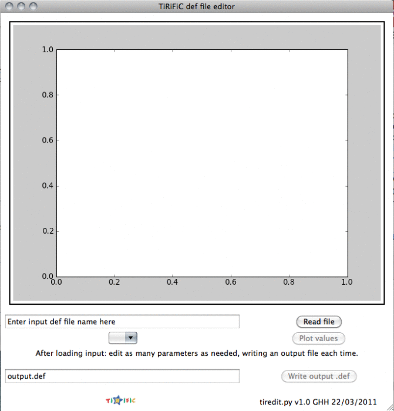
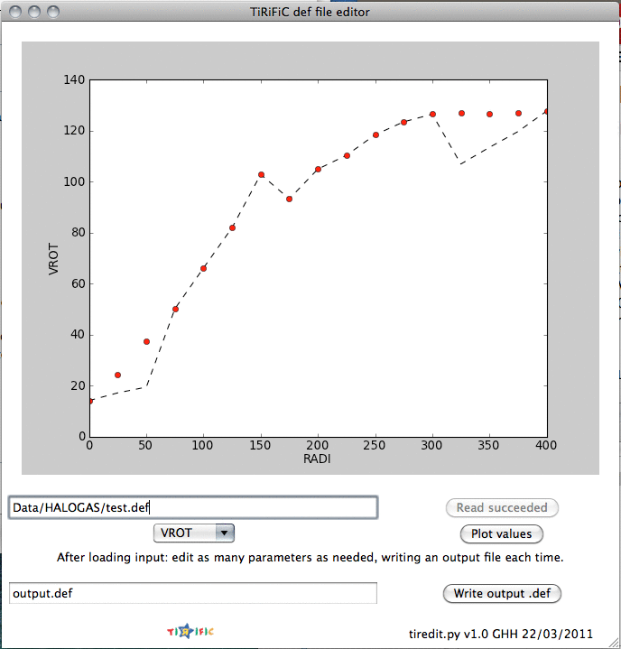

Former versions of TiRiFiC came with a convenient graphical user-interface, which could unfortunately not be maintained, and is today incompatible with the (updated) libraries it depends on. As a first substitute, we provide on this page a TiRiFiC default file editor, programmed and kindly made available by George Heald. As the name suggests, the software is a GUI to edit TiRiFiC default files. Users should be familiar with TiRiFiC.
| Contents: |
Download the file tiredit.py to a directory pathtodirectory, enter the directory and make it executable:
> chmod +x tiredit.py
The python file tiredit.py can be saved somewhere in your PATH so that you can easily run it from any directory. It requires python as well as the python packages called numpy, matplotlib (version >= 1.0 seems to be necessary), and Tkinter. These are quite standard. The program can be started by typing "pathtodirectory/tiredit.py" or, if the directory is in the PATH variable, by typing "tiredit.py".
|  |  | |
| Fig. 1: TiRiFiC default file editor, screenshots. Left: after starting the editor. Right: after loading a default file and choosing a parameter | ||
When you run tiredit.py, you will see a window like the one shown to the left in Fig. 1. In this window, you should:
Please let us know if you run into any bugs.